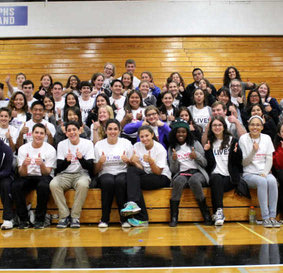

Liana Banh
Liana Banh is a current second year student at University of California, Riverside pursuing her Bachelor of Arts in Business Administration. She has taken relevant courses such as Microeconomics, Macroeconomics, Accounting, and Introduction to Business. In the future, she hopes to work for an accounting firm as an auditor. She has a strong passion for crunching numbers and attention to detail.
She attended Arcadia High School in Arcadia, California. Relavant coursework includes AP Computer Science and AP Comparative Government. In high school, she participated in the Arcadia Apache Marching Band for two years. Both years, the band placed first and third place in the Southern California Marching Band Competition that gathers the best high school bands from Southern California. She was also part of the Yearbook Committee for one year as the photographer where her duties were to attend events and capture the perfect moments. Her effort was praised by the staff and yearbook advisor.
For three months she has worked under Dr. Catherine Tuong in Ontario, CA as an office assistant. She always has a good attitude when working because she wants to ensure every patient feels welcomed when walking in. One of her duties was to schedule appointments over the phone or in person. Maintained office operations by receiving and distributing communications; collecting and mailing correspondence and copying information. While working, she used the work computer and a host of other office software applications, including word processing, email, and file management tools, prepare files and documents in MS-Word by using predefined templates or by creating them from the scratch, file documents; develop and modify filing practices – this includes the usage of electronic in addition to paper records, and responsible for opening or reviewing correspondence and determining proper action to be taken. She was able to use Excel, Powerpoint, and Access in a professional manner.
Since September 2019, she has been working at Edible Arrangements in Fontana, CA as a customer service representative and production team member. Her duties as a production team member is to build arrangements according to their brand standards, prepare a variety of arrangements according to customers' orders or supervisors' instructions, following approved procedures and proper portion sizes, wash, peel and/or cut various fruit to prepare for arranging, and receive and store fruit supplies, equipment, and utensils in refrigerators and other storage areas. Working with a staff, she become a team player: Inform supervisors when supplies are getting low or equipment is not working properly. Most importantly, she was a great customer service person: welcomes and connects with every customer to provide excellent customer service, discovers customer needs and appropriately suggests products with every customer to enhance service and meet sales goals, uses effective sales approaches and displays strong knowledge of product line; effectively converts customer inquiries into sales.
Over the next few years, I hope to get into the summer leadership program where I will work closely one-on-one with professionals to enhance facets of business. After that, I would like an internship or a job.
Experience
Developer
• Help take orders and make sure the correct orders go to the correct locations
• Take orders over the phone, in-person and via email
• Arrange fruit in a fashionly order
Office Assistant
• Answer six-line phone system and direct calls as required
• Greet clients and vendors upon arrival and direct them to appropriate offices
Volunteer
• Accumulated over 400+ hours of volunteer service
• Helped spread awareness around friends, family and community
• Took action to make a difference in your school and community
Education
UC Riverside
Portfolio
